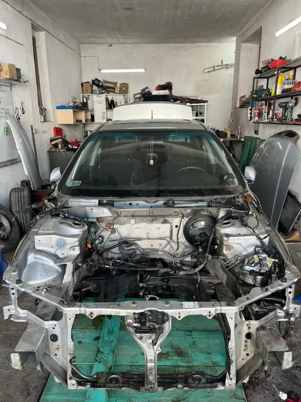
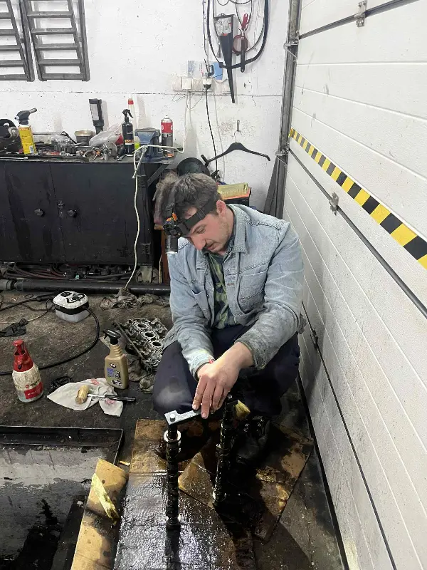
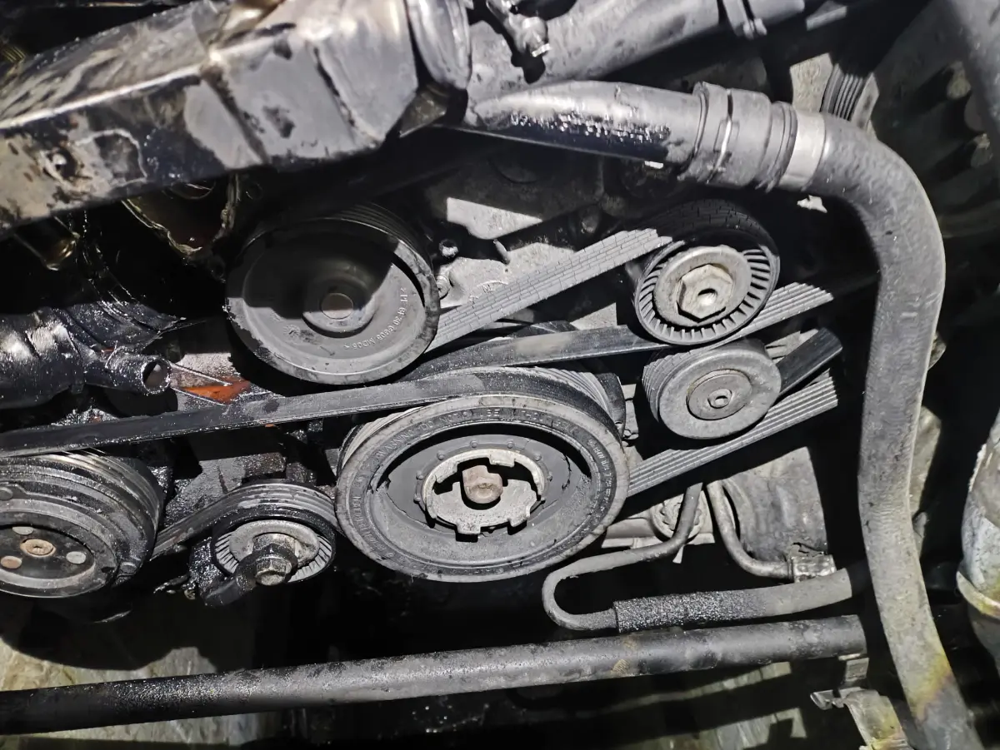
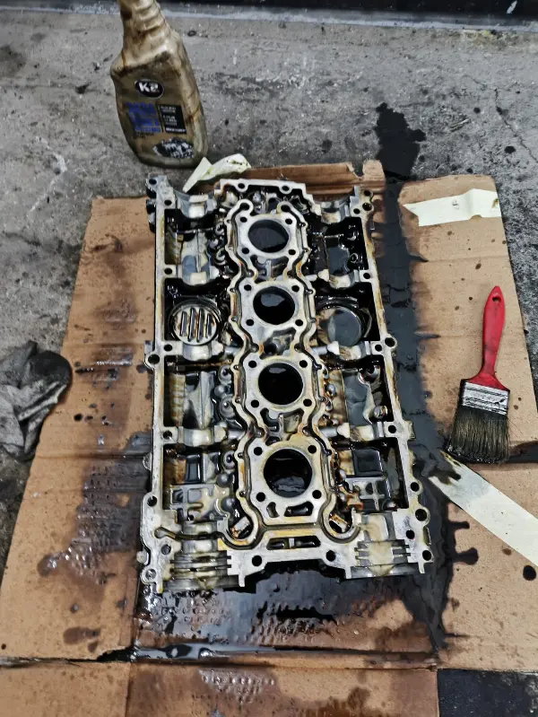
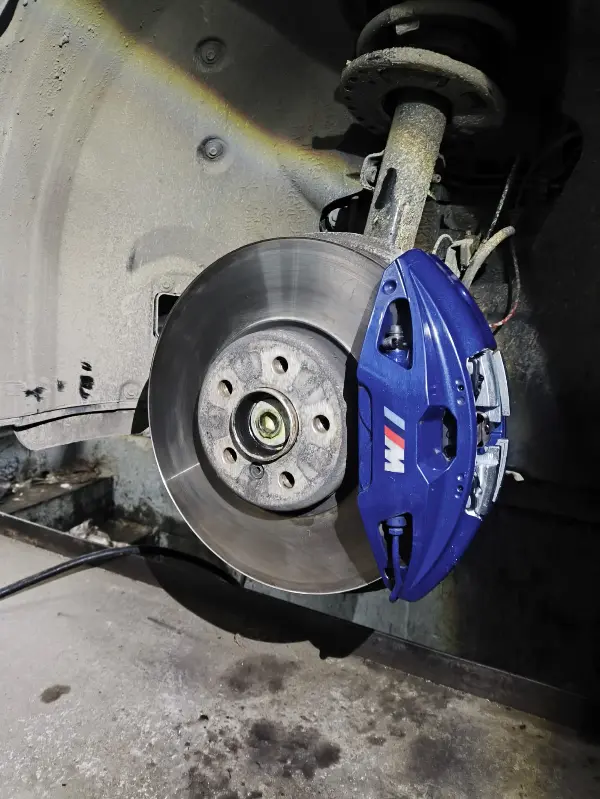

Jak przygotować auto do zimy w Pszczynie?
Przygotowanie samochodu na zimę to kluczowy moment dla każdego kierowcy, szczególnie w regionie pszczyńskim, gdzie zimy mogą być surowe...
Praktyczne porady dla kierowców z Pszczyny i okolic. Dowiedz się więcej o utrzymaniu swojego samochodu w idealnym stanie.
Przygotowanie samochodu na zimę to kluczowy moment dla każdego kierowcy, szczególnie w regionie pszczyńskim, gdzie zimy mogą być surowe...

Diagnostyka komputerowa to nieodłączny element współczesnego serwisu samochodowego. W AutoKord w Pszczynie posiadamy...

Wyciszanie samochodu to inwestycja, która przekłada się na komfort jazdy i jakość codziennego użytkowania pojazdu...

Konserwacja podwozia to jedna z najważniejszych czynności konserwacyjnych, szczególnie w regionie pszczyńskim...

Warsztat samochodowy w Pszczynie AutoKord dzieli się wiedzą o najczęstszych objawach uszkodzeń pojazdów...

Montaż car audio to doskonały sposób na poprawę komfortu jazdy i jakości dźwięku w Twoim samochodzie...
Wybór odpowiedniego warsztatu samochodowego to kluczowe zadanie dla każdego właściciela pojazdu...
Wymiana opon to jedna z najważniejszych czynności konserwacyjnych, która zapewnia bezpieczeństwo jazdy...
Skontaktuj się z nami, a nasz zespół specjalistów pomoże Ci rozwiązać każdy problem z Twoim samochodem.